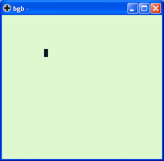

參考資訊：
https://bgb.bircd.org/
https://github.com/mrombout/gbdk_playground
http://gbdk.sourceforge.net/doc/html/book01.html
Delay設定
void delay(UWORD ms);
第一個參數是延遲時間，ms為單位
main.c
#include <gb/gb.h>
unsigned char sprite[] = {
0x0f, 0x0f, 0x0f, 0x0f, 0x0f, 0x0f, 0x0f, 0x0f,
0x0f, 0x0f, 0x0f, 0x0f, 0x0f, 0x0f, 0x0f, 0x0f,
0xf0, 0xf0, 0xf0, 0xf0, 0xf0, 0xf0, 0xf0, 0xf0,
0xf0, 0xf0, 0xf0, 0xf0, 0xf0, 0xf0, 0xf0, 0xf0,
};
void main(void)
{
SPRITES_8x8;
set_sprite_data(0, 2, sprite);
move_sprite(0, 50, 50);
SHOW_SPRITES;
while (1) {
set_sprite_tile(0, 0);
delay(1000);
set_sprite_tile(0, 1);
delay(1000);
}
}
完成
